State none: choose Create, Connect existing or Skip; repository, identity, access and zero import are visible.
The rail selects the setup mode; Enter previews its plan. Nothing is written from this screen.
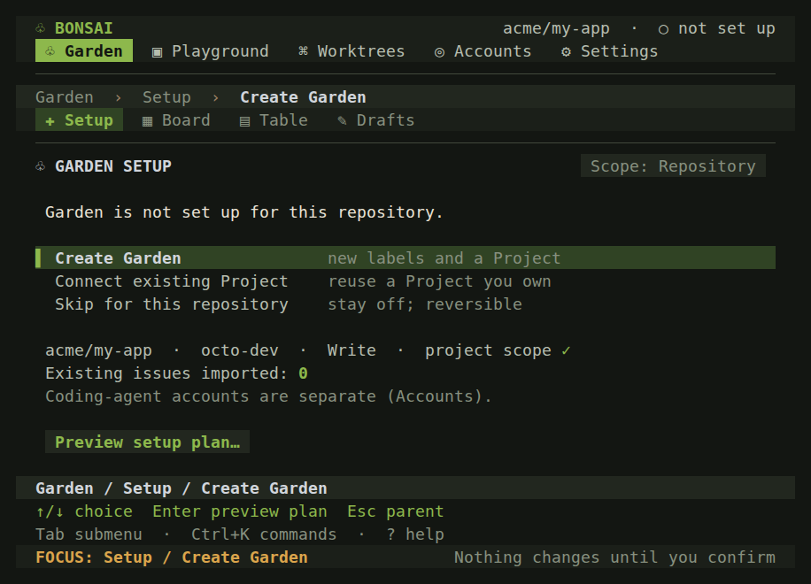
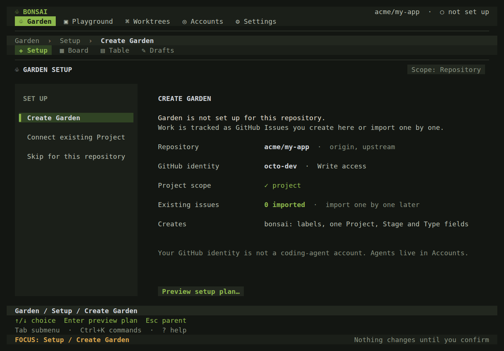
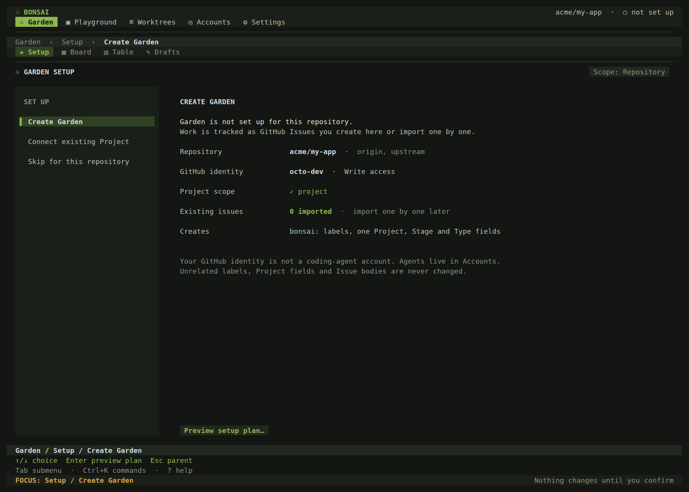
Shown only when remotes resolve to different numeric repository IDs (AmbiguousError).
Remotes sharing an ID are one row with aliases. URLs are shown sanitized, never with credentials.
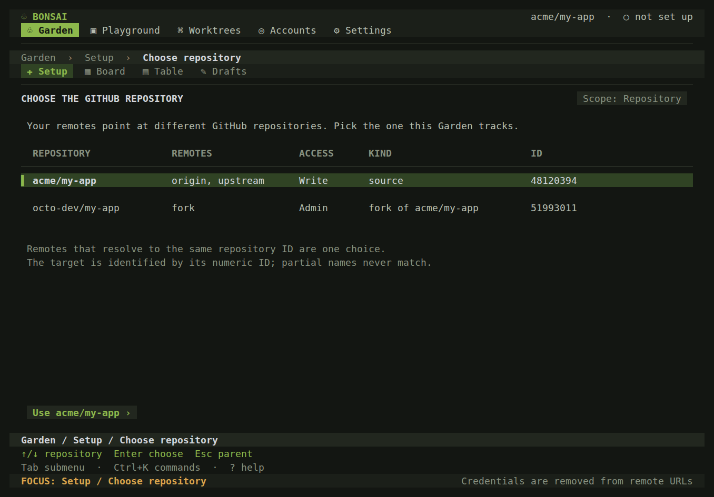
ConnectExisting: explicit Project choice; same-name Projects are flagged, never auto-adopted.
Fields are reused by name; only missing fields are added. Unrelated fields stay untouched.
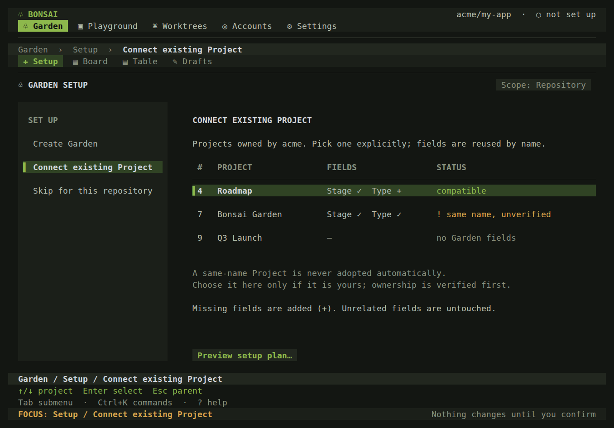
Pure plan preview: every label, Project and field step, reuse and manual step; import count is zero.
Each row is a selectable step. Enter moves to confirmation; nothing is written here.
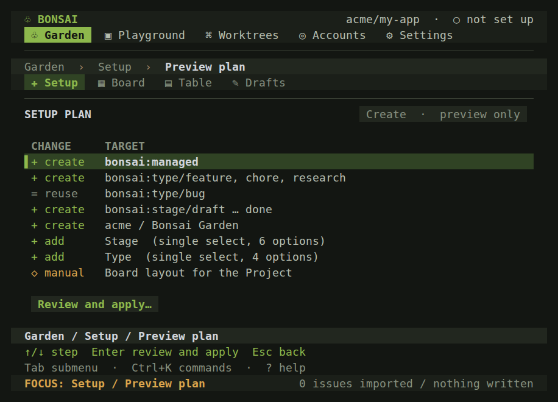
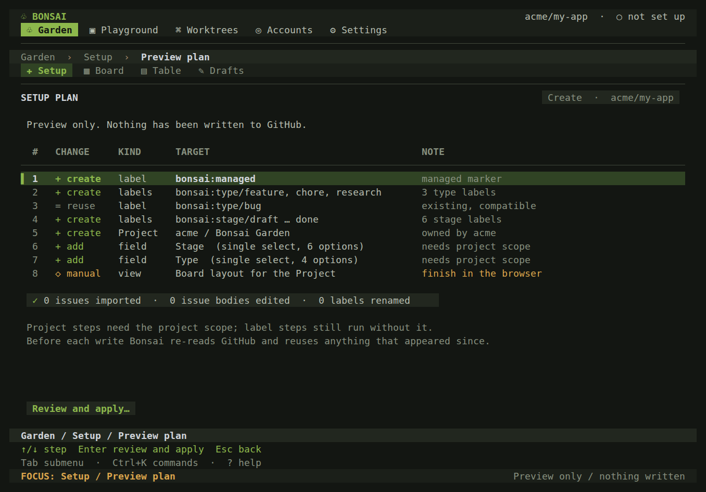
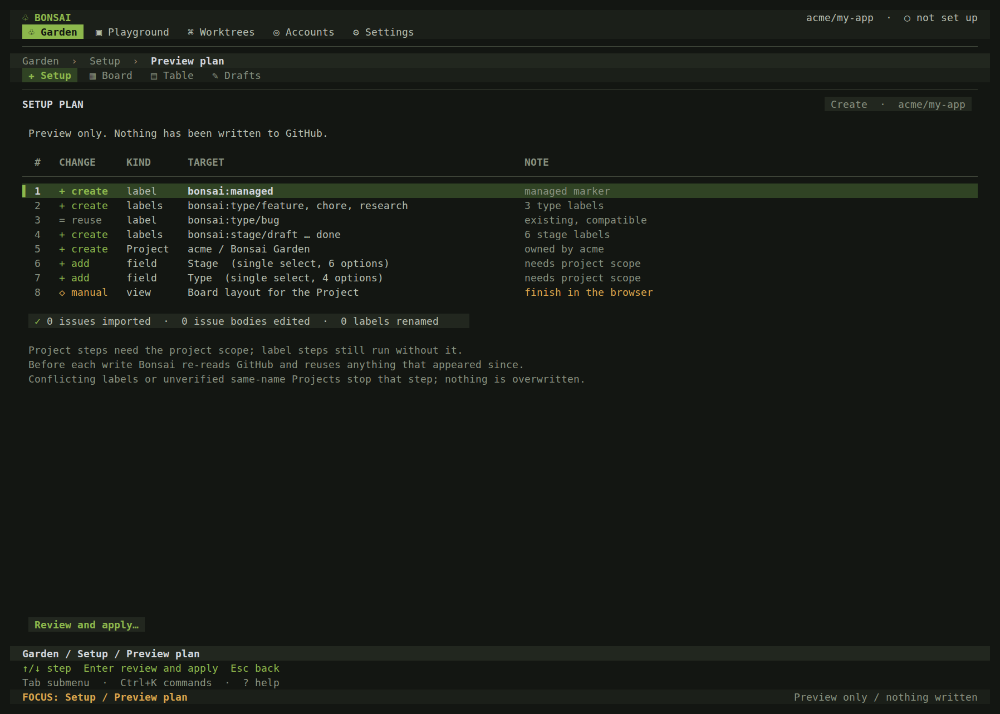
Exact consequence before Apply, in the C-01 confirmation style; Cancel has initial focus.
Only Apply setup writes to GitHub. Escape cancels without writing.
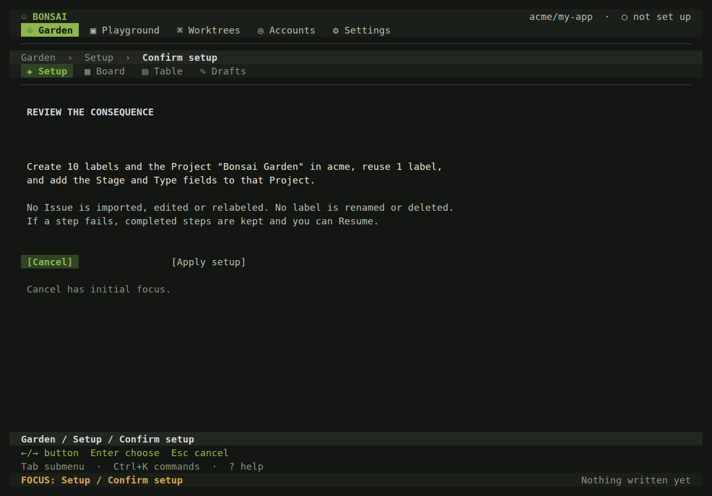
partial-setup: completed steps kept, failed step shows a safe code, Resume re-observes first.
The user grants the scope; Bonsai never refreshes a token. Resume is the primary action.
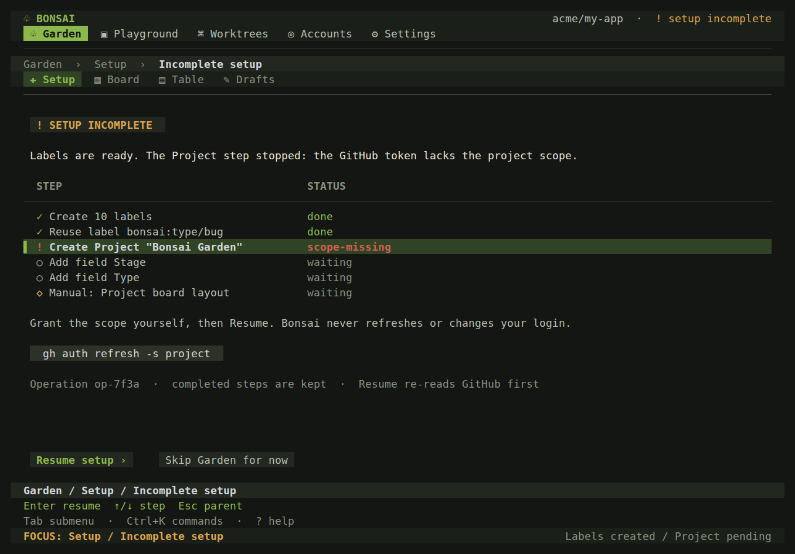
Read access: the Garden is readable, setup actions are absent with a reason.
No setup or approval action is offered. Board, Table and Drafts remain readable.
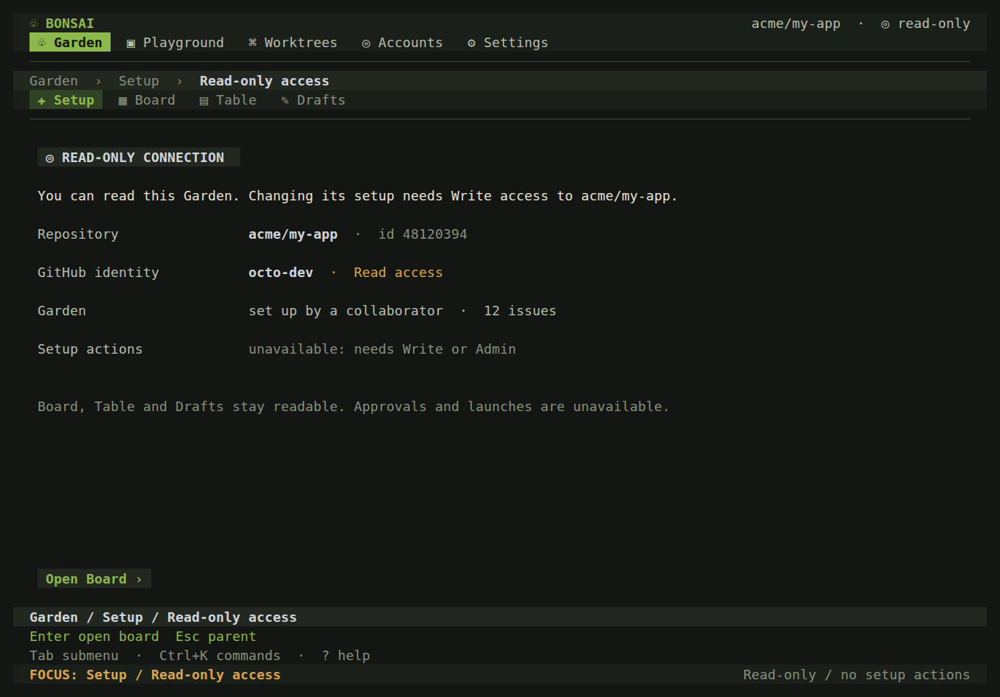
skipped: a durable, reversible opt-out for this local clone.
Enter starts setup again. Settings › Garden reflects the same state.
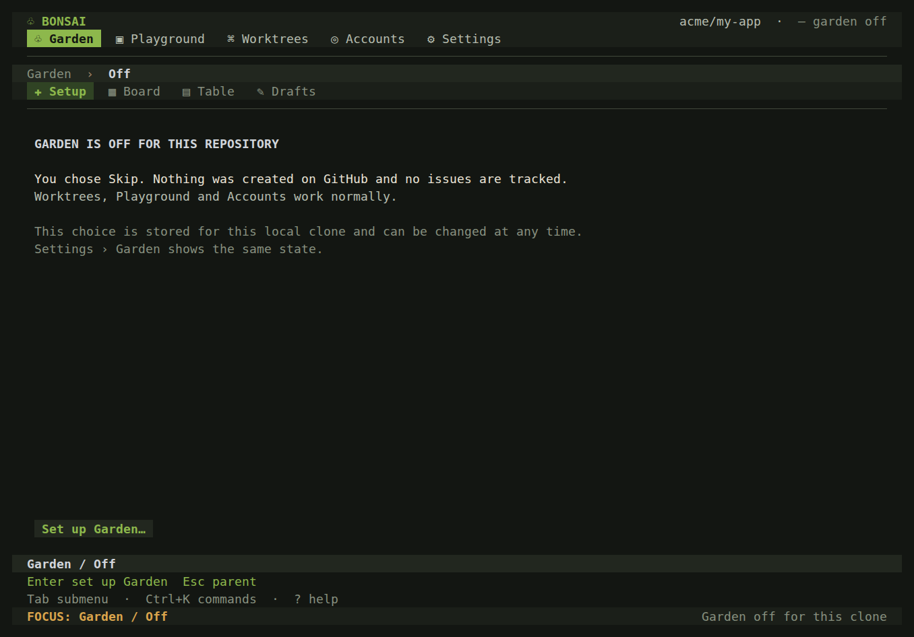